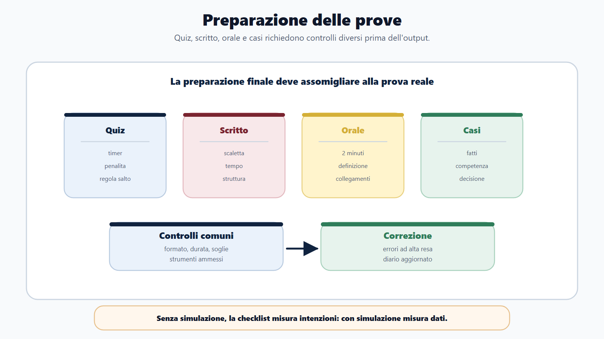
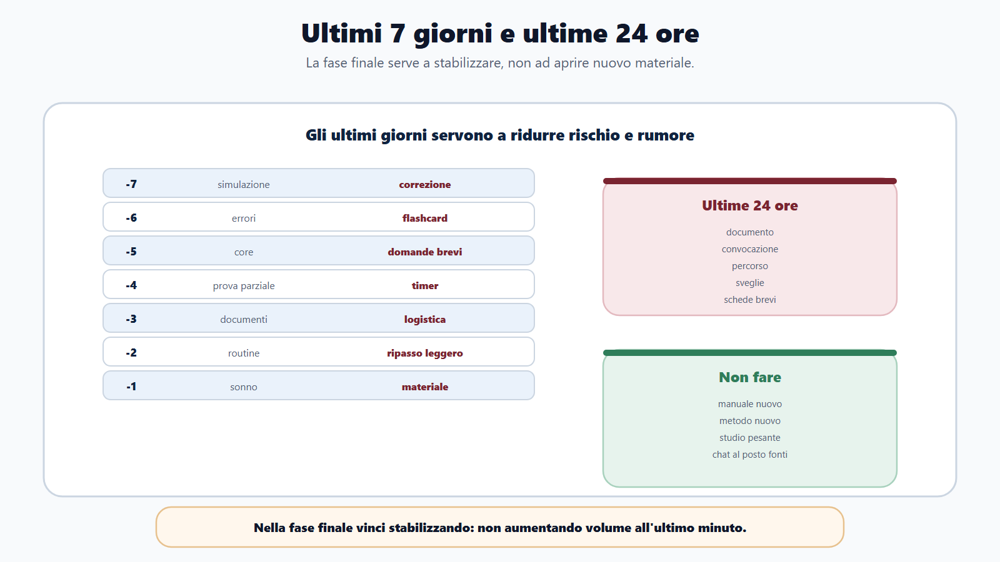
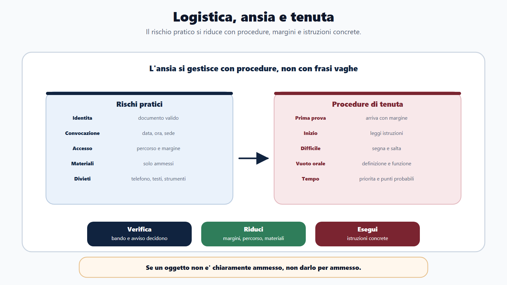
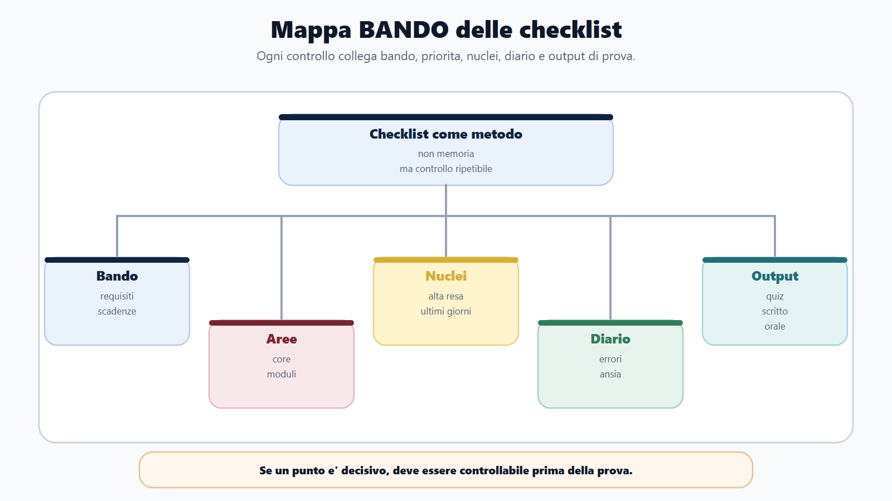
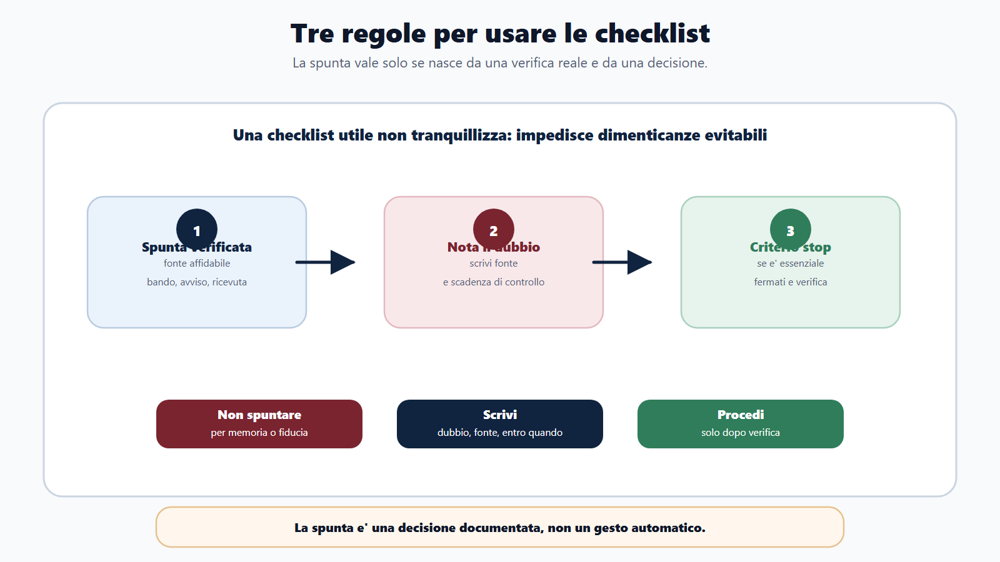
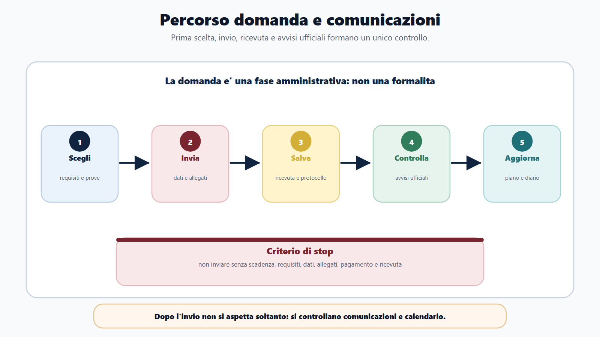

VOL-01 · Capitolo 24
Parte V · Kit finale
Checklist
operative
Non introduce una nuova materia. Raccoglie in controlli pratici ciò che hai visto nel libro. Se un punto è decisivo, deve essere controllabile. Carta e penna bastano: il digitale è opzionale.
Schema
Checklist preparazione prove

Schema
Ultimi sette giorni ventiquattro ore

Schema
Logistica ansia tenuta

Schema
Mappa bando checklist

Schema
Tre regole checklist

Schema
Percorso domanda comunicazioni

01 · Come usarle
Tre regole, un criterio di stop
Una checklist impedisce di dimenticare ciò che conta quando sei stanco, in ritardo o sotto pressione. Non serve soltanto a tranquillizzarti. Le checklist non sostituiscono il ragionamento: lo rendono ripetibile. Bando e avvisi ufficiali prevalgono sempre sulla memoria.
Spunta solo ciò che hai verificato
Non per memoria o fiducia. Una spunta significa: ho controllato su fonte affidabile, bando, avviso, portale, ricevuta o documento.
Il dubbio va scritto
Non tenerlo in testa. Dubbio, fonte da verificare, entro quando. Il digitale può aiutare con promemoria e allegati, ma non deve essere indispensabile.
Stop sui punti essenziali
Se un punto essenziale non è chiaro, non procedere automaticamente. Fermati, verifica, poi decidi.
Fidarsi del ricordo invece di rileggere bando e avvisi. Inviare senza salvare ricevuta. Non controllare dove saranno pubblicate le comunicazioni.
02 · BANDO
Ogni lettera ha i suoi controlli
Se una riga della checklist unica resta vuota, quella è la tua prossima azione. Non «ho studiato bene»: ho verificato.
| Checklist collegata | Scopo | Se la salti | |
|---|---|---|---|
| B — Bando | Prima scelta, domanda, comunicazioni, graduatoria. | Evitare esclusioni e letture incomplete. | Studi un concorso a cui non puoi partecipare, o perdi una scadenza. |
| A — Aree | Avvio studio, materie, moduli, piano. | Dare priorità. | Parti dal manuale o dalla materia più comoda. |
| N — Nuclei | Prova, ultimi giorni. | Concentrarsi su alta resa. | Apri nuovi mondi quando dovresti stabilizzare. |
| D — Diario | Errori, ansia, dopo prova. | Correggere. | L’esperienza non diventa vantaggio per il concorso successivo. |
| O — Output | Scritto, quiz, orale, caso. | Allenare ciò che verrà chiesto. | Arrivi senza timer, senza voce, senza scaletta. |
Se un punto è decisivo, deve essere controllabile.
La preparazione non elimina il rischio pratico. Scadenze, documenti, formato, tempo, sede, comunicazioni, regole e gestione dell’ansia possono compromettere anche chi ha studiato. Gli ultimi giorni non riguardano solo conoscenza: riguardano stabilità.
03 · Scelta e domanda
Prima di studiare, prima di inviare, dopo l’invio
La domanda è una fase amministrativa, non una formalità. Un candidato preparato può perdere un concorso per una scadenza, un allegato, un pagamento o una ricevuta non controllata. Dopo l’invio non rilassarti: inizia il controllo.
| Momento | Controlli essenziali | Criterio di stop |
|---|---|---|
| Prima di scegliere | Bando ufficiale, non un riassunto. Requisiti e titolo. Profilo e mansioni. Prove, materie, punteggi, soglie. Giorni e ore realistiche. Nucleo e modulo. Quale prova elimina. Compatibilità con altri concorsi. Che cosa non studiare ora. | Non iniziare il piano se non sai se puoi partecipare, quando scade la domanda, quali prove, quali materie, quale modulo. |
| Prima di inviare | Data e ora di scadenza. Portale. Dati e recapiti. Dichiarazioni. Titolo e titoli valutabili. Allegati nel formato corretto. Pagamento. Email, PEC o domicilio digitale. Rilettura. Ricevuta. Dove verranno le comunicazioni. | Non inviare se non hai verificato scadenza, requisiti, dati, allegati, pagamento e ricevuta generabile. |
| Dopo l’invio | Ricevuta in due posti. Protocollo. Copia del bando. Portale comunicazioni. Promemoria. Banca dati eventuale. Piano 30/60/90. Scheda concorso. Diario. Core e modulo. | Senza ricevuta e canale ufficiale, il controllo successivo è cieco. |
04 · Comunicazioni e avvio studio
Frequenza dei controlli, poi perimetro
Non iniziare una sequenza casuale di capitoli se non hai definito almeno perimetro, tre priorità, primo output e data di verifica. Se il calendario della prova non è noto, lavora con un ciclo breve di quattordici giorni e rivalutalo.
Frequenza minima
Subito dopo la domanda: ricevuta e bando. Prima del calendario: una o due volte a settimana. Dopo calendario o banca dati: controllo ravvicinato. Ultimi sette giorni: ogni giorno sulle fonti ufficiali. Evita di basarti su chat o voci informali.
Scheda di avvio
Davanti: bando, programma, allegati. Elenco materie senza tagli per abitudine. Nucleo, modulo, abilità di prova. Pesi, soglie, prove eliminatorie. Livello iniziale con un output diagnostico. Non più di tre priorità. Ore realistiche, recupero, prima simulazione. Diario e fonte principale per materia. Che cosa rinviare e perché. Obiettivo verificabile dei prossimi sette giorni.
05 · Prima delle prove
Quiz, scritto, orale: formati diversi, stessa logica
Adatta al formato reale. L’orale non si prepara leggendo in silenzio. Lo scritto senza scaletta e senza limite di tempo è un tema, non una prova.
| Prova | Controlli specifici |
|---|---|
| Comune a tutte | Formato, durata, punteggio, soglie. Penalità. Strumenti ammessi e vietati. Almeno una simulazione nel formato reale. Errori per categoria. Nuclei deboli. Sede, orario, convocazione, documenti. Piano ultime 24 ore. |
| Quiz | Tempo medio per domanda. Timer. Errori di memoria, concetto, lettura, tempo, strategia. Regola per domande lunghe o incerte. Banca dati se ufficiale. |
| Scritto o teorico-pratica | Sintetica, tema, caso, atto, risposta breve. Scalette. Almeno una risposta a tempo. Struttura: definizione, funzione, riferimento, esempio, chiusura. Correzione di pertinenza, ordine, lessico, completezza. |
| Orale | Materie e criteri. Inglese, informatica o prova pratica orale. Schede domanda-risposta. Due minuti. Definizione, funzione, esempio, collegamento. Profilo e amministrazione. Vuoti, lunghezze, lessico. Domande incrociate. Apertura e chiusura. |
06 · Ultimi giorni
Sette giorni per stabilizzare, ventiquattro ore per ridurre il rischio
Gli ultimi sette giorni non servono ad aprire nuovi mondi. Nelle ultime ventiquattro ore l’obiettivo è arrivare lucido, non aumentare il volume. Se un oggetto non è chiaramente ammesso, non darlo per ammesso: verifica nell’avviso.
| Quando | Priorità | Che cosa non fare |
|---|---|---|
| −7 / −6 | Simulazione o prova completa, correzione profonda. Ripasso errori, flashcard, modulo debole. | Aprire un manuale nuovo. Cambiare metodo. |
| −5 / −4 | Core ad alta resa, orali brevi. Seconda simulazione o prova parziale. | Quiz senza correggere. Studiare solo la materia preferita. |
| −3 / −2 | Documenti, logistica, schede finali. Ripasso leggero, errori ricorrenti, routine. | Ignorare documenti e percorso. |
| −1 e ultime 24 ore | Solo rifinitura, sonno, materiale, orari. Identità, convocazione, ricevuta se utile, sede, partenza con margine, materiale ammesso, sveglie, poche pagine. | Studio pesante serale. Restare svegli per recuperare. |
07 · Logistica e tenuta
Procedure, non frasi motivazionali
Questa checklist non sostituisce le istruzioni ufficiali. Identità, domanda, convocazione, accesso, materiali, divieti, salute se ammessa, emergenze. L’ansia non si elimina con «devo stare calmo». Si gestisce con istruzioni.
| Situazione | Procedura |
|---|---|
| Prima della prova | Arriva con margine, evita discussioni, rivedi solo schede brevi. |
| Inizio prova | Leggi istruzioni, controlla tempo, respira, non partire in automatico. Cerchia negazioni ed eccezioni. |
| Domanda difficile / vuoto orale | Segna, salta se previsto, torna dopo. Riparti da definizione, funzione, esempio. Se non sai, delimita il tema. |
| Errore percepito / tempo che corre | Non inseguire l’errore precedente. Torna al punto successivo. Prima i punti più probabili. |
Istruzioni operative: leggo la consegna due volte; cerchio negazioni; parto dalla definizione; se perdo tempo, salto; se sbaglio una domanda, torno al piano.
08 · Dopo la prova e la graduatoria
Dati per il prossimo concorso, atti per questa posizione
Il dopo prova è il momento per migliorare, non solo per aspettare. La graduatoria non va letta soltanto come un numero. Il manuale aiuta a organizzare i controlli, ma non sostituisce la valutazione del caso concreto. Non inviare contestazioni generiche e non lasciare decorrere un termine basandoti su chat.
Scheda post-prova
Annota entro poche ore. Che cosa è andato bene. Che cosa ha fatto perdere tempo. Quale materia era più presente del previsto. Quale errore si è ripetuto. Che cosa correggere entro sette giorni. Quale materiale è stato utile. Che cosa non userai più. Distingui contenuto, tempo, ansia, strategia. Aggiorna diario e piano. Non basarti solo sulle voci informali.
Dopo la pubblicazione
Canale ufficiale. Copia con data. Posizione e punteggio. Distingui provvisoria, definitiva, approvata, rettificata. Avvisi collegati, non solo la tabella. Termini e uffici. Se rilevi un possibile errore, raccogli ricevute e documenti. Niente richieste informali su altri candidati. Convocazioni o scorrimenti. Decidi se attendere, chiedere chiarimenti, attivare una tutela qualificata o spostare il focus. Data del prossimo controllo.
09 · Caso guidato
Giulia, sette giorni, niente nuovo manuale
Prepara un concorso con scritto a quiz e orale. Ha studiato molto, ma non ha una procedura finale. Sette giorni prima compila la checklist e il piano cambia: riduce il rischio, non aggiunge volume.
Quattro buchi pratici
Non ha controllato bene la sede. Non ha simulato il quiz con il tempo reale. All’orale risponde troppo a lungo. Tre errori ricorrenti nel diario: accesso, organi del Comune, negazioni nei quiz.
Una simulazione, tre drill, logistica
Simulazione con timer. Ripasso mirato su accesso e organi. Drill su parole-spia. Tre risposte orali da due minuti. Controllo documenti e percorso. Non apre un nuovo testo.
10 · Verifica
Due domande da saper spiegare
Perché una checklist è utile anche a un candidato ben preparato?
Perché la preparazione non elimina il rischio pratico. Scadenze, documenti, formato prova, tempo, sede, comunicazioni, regole e gestione dell’ansia possono compromettere anche chi ha studiato. La checklist rende controllabili i passaggi essenziali e impedisce di procedere quando un punto decisivo non è stato verificato.
Se ho studiato bene, posso saltare la checklist degli ultimi giorni?
No. Gli ultimi giorni non riguardano solo conoscenza. Riguardano stabilità, logistica, documenti, timer, ripasso errori e lucidità. Saltare questi controlli aumenta il rischio evitabile. Una checklist senza diario aggiornato, del resto, è solo una lista di buone intenzioni.
11 · Mini-esercizio
Checklist unica: una azione per ogni riga vuota
Se non trovi nessun punto incompleto, fai una simulazione: spesso i buchi emergono dall’output, non dalla sensazione. Entro 48 ore, una sola azione per riga.
| Fase | Domanda | Se è vuota, la prossima azione è… |
|---|---|---|
| Bando | Posso partecipare e ho capito prove, scadenze, materie e regole? | Rileggere il documento ufficiale, non un riassunto. |
| Aree | Ho diviso core, modulo e prova? | Due colori sul programma e un limite al modulo. |
| Nuclei | Ho scelto priorità ad alta resa? | Lista di venti nuclei, non l’indice del manuale. |
| Diario | Sto correggendo errori e piano? | Classificare gli ultimi dieci sbagli e fissare un drill. |
| Output | Sto producendo quiz, risposte, casi, orale o simulazioni? | Una simulazione datata, poi correzione. |
12 · Da tenere ferme
Cinque regole, con il perché
1. La checklist serve a evitare errori pratici, non a decorare il piano, perché scadenze e documenti possono vanificare lo studio.
2. Ogni spunta deve corrispondere a una verifica reale, perché la memoria e la fiducia non sono fonti.
3. Il bando e gli avvisi ufficiali prevalgono sempre sulla memoria, perché chat e riassunti non proteggono un termine.
4. Gli ultimi giorni servono a stabilizzare, non ad accumulare, perché nuovi manuali e notti perse aumentano il rischio.
5. Dopo la prova, il diario trasforma l’esperienza in vantaggio per il prossimo concorso, perché senza dati ricominci da una sensazione.
Chiusura del volume
Il metodo che resta dopo il libro
Non hai in mano più materie di prima. Hai un criterio per decidere quali studiare prima, quali approfondire e quali lasciare al modulo giusto. Il metodo continua ogni volta che apri un bando nuovo: si riapplica, non si ricorda a memoria.